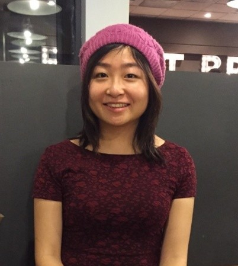

About Me
Front-End Web Developer with former background in Biology and Chemistry. Self-driven with a passion in technology, eager to learn, and enjoy collaboration.
I graduated from University of Washington with a Bachelor of Science in Molecular, Cellular and Developmental Biology. I moved to Clackamas, OR in 2015 to work for a nutraceutical company and was first introduced to the state of art technique of the Inductively Coupled Mass Spectrometry instruments in the Inorganic Chemistry field. In 2017, I was back to Seattle to be closer with my family. As I continued to work in the Chemistry field, I decided to take a leap of faith out of my comfort zone and pursue a career change. I am extremely excited to be a part of the UW Coding Bootcamp. I am looking forward to my future career.
UW Coding Bootcamp has continually challenged my curiosity to explore the endless opportunities in the world of technology. Through the program, I discover new potentials day by day working with people who are just as excited, motivated, and knowledgeable. I was introduced to a wealth of knowledge and applied them into multiple assignments and projects. By the 10th week, I am equipped to be a future Front-End Web Developer. Through perseverance and a lot of hard work, I am proudly reflecting on my achievements.
Check out my portfolio page for my work and projects.
- HTML
- CSS
- JavaScript
- jQuery
- API
- Firebase
In my free time, I enjoy hanging out with my family and friends, hiking, practicing yoga, and cooking. I am also an advocate of environmental protection. I volunteered at the Seattle Aquarium and joined their Beach Naturalist program for few months after graduation in 2014.